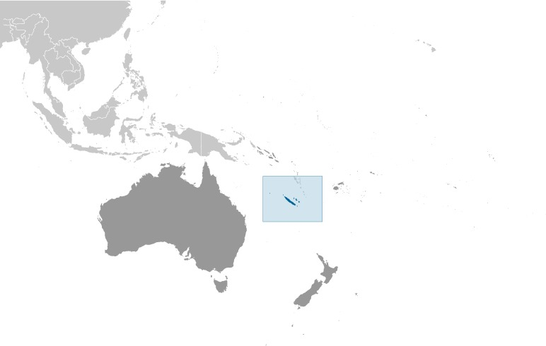
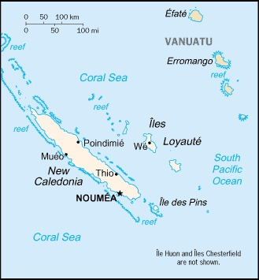
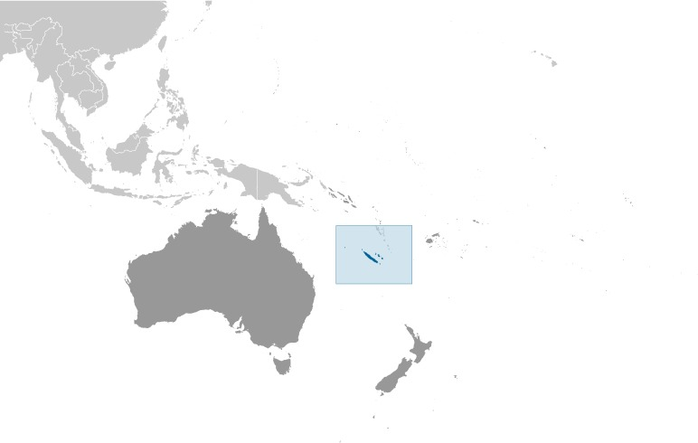
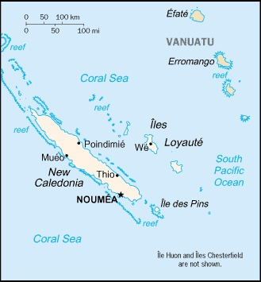

-
Introduction :: New Caledonia
-
Background:Settled by both Britain and France during the first half of the 19th century, the island became a French possession in 1853. It served as a penal colony for four decades after 1864. Agitation for independence during the 1980s and early 1990s ended in the 1998 Noumea Accord, which over two decades transferred an increasing amount of governing responsibility from France to New Caledonia. In a referendum held in November 2018, residents rejected independence and decided to retain their territorial status, although two additional referendums may occur in 2020 and 2022, per the Noumea Accord.
-
Geography :: New Caledonia
-
Location:Oceania, islands in the South Pacific Ocean, east of AustraliaGeographic coordinates:21 30 S, 165 30 EMap references:OceaniaArea:total: 18,575 sq kmland: 18,275 sq kmwater: 300 sq kmcountry comparison to the world: 155Area - comparative:slightly smaller than New JerseyLand boundaries:0 kmCoastline:2,254 kmMaritime claims:territorial sea: 12 nmexclusive economic zone: 200 nmClimate:tropical; modified by southeast trade winds; hot, humidTerrain:coastal plains with interior mountainsElevation:lowest point: Pacific Ocean 0 mhighest point: Mont Panie 1,628 mNatural resources:nickel, chrome, iron, cobalt, manganese, silver, gold, lead, copperLand use:agricultural land: 10.4% (2011 est.)arable land: 0.4% (2011 est.) / permanent crops: 0.2% (2011 est.) / permanent pasture: 9.8% (2011 est.)forest: 45.9% (2011 est.)other: 43.7% (2011 est.)Irrigated land:100 sq km (2012)Population distribution:most of the populace lives in the southern part of the main island, in and around the capital of NoumeaNatural hazards:
cyclones, most frequent from November to March
volcanism: Matthew and Hunter Islands are historically active
Environment - current issues:preservation of coral reefs; prevention of invasive species; limiting erosion caused by nickel mining and forest firesGeography - note:consists of the main island of New Caledonia (one of the largest in the Pacific Ocean), the archipelago of Iles Loyaute, and numerous small, sparsely populated islands and atolls -
People and Society :: New Caledonia
-
Population:290,009 (July 2020 est.)country comparison to the world: 182Nationality:noun: New Caledonian(s)adjective: New CaledonianEthnic groups:Kanak 39.1%, European 27.1%, Wallisian, Futunian 8.2%, Tahitian 2.1%, Indonesian 1.4%, Ni-Vanuatu 1%, Vietnamese 0.9%, other 17.7%, unspecified 2.5% (2014 est.)Languages:French (official), 33 Melanesian-Polynesian dialectsReligions:Roman Catholic 60%, Protestant 30%, other 10%Age structure:0-14 years: 21.74% (male 32,227/female 30,819)15-24 years: 15.63% (male 23,164/female 22,163)25-54 years: 43.73% (male 63,968/female 62,856)55-64 years: 9.06% (male 12,700/female 13,568)65 years and over: 9.84% (male 12,552/female 15,992) (2020 est.)population pyramid:
 The World Factbook Field Image ModalAustralia - Oceania :: New Caledonia Print
The World Factbook Field Image ModalAustralia - Oceania :: New Caledonia Print Image DescriptionThis is the population pyramid for New Caledonia. A population pyramid illustrates the age and sex structure of a country's population and may provide insights about political and social stability, as well as economic development. The population is distributed along the horizontal axis, with males shown on the left and females on the right. The male and female populations are broken down into 5-year age groups represented as horizontal bars along the vertical axis, with the youngest age groups at the bottom and the oldest at the top. The shape of the population pyramid gradually evolves over time based on fertility, mortality, and international migration trends.
Image DescriptionThis is the population pyramid for New Caledonia. A population pyramid illustrates the age and sex structure of a country's population and may provide insights about political and social stability, as well as economic development. The population is distributed along the horizontal axis, with males shown on the left and females on the right. The male and female populations are broken down into 5-year age groups represented as horizontal bars along the vertical axis, with the youngest age groups at the bottom and the oldest at the top. The shape of the population pyramid gradually evolves over time based on fertility, mortality, and international migration trends.
For additional information, please see the entry for Population pyramid on the Definitions and Notes page under the References tab.Dependency ratios:total dependency ratio: 46.6youth dependency ratio: 32.4elderly dependency ratio: 14.2potential support ratio: 7 (2020 est.)Median age:total: 32.9 yearsmale: 32.1 yearsfemale: 33.7 years (2020 est.)country comparison to the world: 103Population growth rate:1.25% (2020 est.)country comparison to the world: 87Birth rate:14.5 births/1,000 population (2020 est.)country comparison to the world: 128Death rate:5.9 deaths/1,000 population (2020 est.)country comparison to the world: 172Net migration rate:3.8 migrant(s)/1,000 population (2020 est.)note: there has been steady emigration from Wallis and Futuna to New Caledonia
country comparison to the world: 31Population distribution:most of the populace lives in the southern part of the main island, in and around the capital of NoumeaUrbanization:urban population: 71.5% of total population (2020)rate of urbanization: 1.89% annual rate of change (2015-20 est.)total population growth rate v. urban population growth rate, 2000-2030: PDFMajor urban areas - population:198,000 NOUMEA (capital) (2018)Sex ratio:at birth: 1.05 male(s)/female0-14 years: 1.05 male(s)/female15-24 years: 1.05 male(s)/female25-54 years: 1.02 male(s)/female55-64 years: 0.94 male(s)/female65 years and over: 0.78 male(s)/femaletotal population: 1 male(s)/female (2020 est.)Infant mortality rate:total: 5 deaths/1,000 live birthsmale: 5.9 deaths/1,000 live birthsfemale: 4.1 deaths/1,000 live births (2020 est.)country comparison to the world: 177Life expectancy at birth:total population: 78.4 yearsmale: 74.4 yearsfemale: 82.5 years (2020 est.)country comparison to the world: 67Total fertility rate:1.88 children born/woman (2020 est.)country comparison to the world: 133Drinking water source:improved: total: 100% of populationunimproved: total: 0% of population (2017 est.)Physicians density:2.22 physicians/1,000 population (2009)Sanitation facility access:improved: total: 100% of populationunimproved: total: 0% of population (2017 est.)HIV/AIDS - adult prevalence rate:NAHIV/AIDS - people living with HIV/AIDS:NAHIV/AIDS - deaths:NAMajor infectious diseases:degree of risk: high (2020)food or waterborne diseases: bacterial diarrheavectorborne diseases: malariaEducation expenditures:NALiteracy:definition: age 15 and over can read and writetotal population: 96.9%male: 97.3%female: 96.5% (2015)Unemployment, youth ages 15-24:total: 38.4%male: 37.1%female: 40% (2014 est.)country comparison to the world: 15 -
Government :: New Caledonia
-
Country name:conventional long form: Territory of New Caledonia and Dependenciesconventional short form: New Caledonialocal long form: Territoire des Nouvelle-Caledonie et Dependanceslocal short form: Nouvelle-Caledonieetymology: British explorer Captain James COOK discovered and named New Caledonia in 1774; he used the appellation because the northeast of the island reminded him of Scotland (Caledonia is the Latin designation for Scotland)Dependency status:special collectivity (or a sui generis collectivity) of France since 1998; note - independence referenda took place on 4 November 2018 and 4 October 2020 with a majority voting to reject independence in favor of maintaining the status quo; an additional referenda, still unsceheduled, may occur in 2022Government type:parliamentary democracy (Territorial Congress); an overseas collectivity of FranceCapital:name: Noumeageographic coordinates: 22 16 S, 166 27 Etime difference: UTC+11 (16 hours ahead of Washington, DC, during Standard Time)etymology: established in 1854 as Port-de-France, the settlement was renamed Noumea in 1866, in order to avoid any confusion with Fort-de-France in Martinique; the New Caledonian language of Ndrumbea (also spelled Ndumbea, Dubea, and Drubea) spoken in the area gave its name to the capital city, Noumea, as well as to the neighboring town (suburb) of DumbeaAdministrative divisions:3 provinces; Province Iles (Islands Province), Province Nord (North Province), and Province Sud (South Province)Independence:none (overseas collectivity of France); note - in two independence referenda, on 4 November 2018 and 4 October 2020, the majority voted to reject independence in favor of maintaining the status quoNational holiday:Fete de la Federation, 14 July (1790); note - the local holiday is New Caledonia Day, 24 September (1853)Constitution:history: 4 October 1958 (French Constitution with changes as reflected in the Noumea Accord of 5 May 1998)amendments: French constitution amendment procedures applyLegal system:civil law system based on French civil lawCitizenship:see FranceSuffrage:18 years of age; universalExecutive branch:chief of state: President Emmanuel MACRON (since 14 May 2017); represented by High Commissioner Laurent PREVOST (since 5 August 2019)head of government: President of the Government Thierry SANTA (since 9 July 2019); Temporary Vice President Gilbert TUIENON (since 9 July 2019); note - Temporary Vice President Gilbert TUIENON was elected so that the new government could take over; Philippe GERMAIN' s government remained caretaker government until the new government was settledcabinet: Cabinet elected from and by the Territorial Congresselections/appointments: French president directly elected by absolute majority popular vote in 2 rounds if needed for a 5-year term (eligible for a second term); high commissioner appointed by the French president on the advice of the French Ministry of Interior; president of New Caledonia elected by Territorial Congress for a 5-year term (no term limits); election last held on 13 June 2017 (next to be held in 2022)election results: Thierry SANTA elected president by Territorial Congress with 6 votes out of 11Legislative branch:description: unicameral Territorial Congress or Congrès du Territoire (54 seats; members indirectly selected proportionally by the partisan makeup of the 3 Provincial Assemblies or Assemblés Provinciales; members of the 3 Provincial Assemblies directly elected by proportional representation vote; members serve 5-year terms); note - the Customary Senate is the assembly of the various traditional councils of the Kanaks, the indigenous population, which rules on laws affecting the indigenous population
New Caledonia indirectly elects 2 members to the French Senate by an electoral colleges for a 6-year term with one seat renewed every 3 years and directly elects 2 members to the French National Assembly by absolute majority vote in 2 rounds if needed for a 5-year termelections:
Territorial Congress - last held on 12 May 2019 (next to be held in May 2024)
French Senate - election last held on 24 September 2017 (next to be held not later than 2019)
French National Assembly - election last held on 11 and 18 June 2017 (next to be held by June 2022)election results:Territorial Congress - percent of vote by party - N/A; seats by party -Future With Confidence 18, UNI 9, UC 9, CE 7, FLNKS 6, Oceanic Awakening 3, PT 1, LKS 1 (Anti-Independence 28, Pro-Independence 26); composition - men 30, women 24, percent of women 44.4%
French Senate - percent of vote by party - NA; seats by party - UMP 2
French National Assembly - percent of vote by party - NA; seats by party - CE 2Judicial branch:highest courts: Court of Appeal in Noumea or Cour d'Appel; organized into civil, commercial, social, and pre-trial investigation chambers; court bench normally includes the court president and 2 counselors); Administrative Court (number of judges NA); note - final appeals beyond the Court of Appeal are referred to the Court of Cassation or Cour de Cassation (in Paris); final appeals beyond the Administrative Court are referred to the Administrative Court of Appeal (in Paris)judge selection and term of office: judge appointment and tenure based on France's judicial systemsubordinate courts: Courts of First Instance include: civil, juvenile, commercial, labor, police, criminal, assizes, and also a pre-trial investigation chamber; Joint Commerce Tribunal; administrative courtsPolitical parties and leaders:Build Our Rainbow Nation
Caledonia Together or CE [Philippe GERMAIN]
Caledonian Union or UC [Daniel GOA]
Future Together (l'Avenir Ensemble) [Harold MARTIN]
Kanak Socialist Front for National Liberation or FLNKS (alliance includes PALIKA, UNI, UC, and UPM) [Victor TUTUGORO]
Labor Party (Parti Travailliste) or PT [Louis Kotra UREGEI]
National Union for Independence (Union Nationale pour l'Independance) or UNI
Party of Kanak Liberation (Parti de Liberation Kanak) or PALIKA [Paul NEAOUTYINE]
Socialist Kanak Liberation or LKS [Nidoish NAISSELINE]
The Republicans (formerly The Rally or UMP) [interim leader Thierry SANTA]
Union for Caledonia in FranceInternational organization participation:ITUC (NGOs), PIF (associate member), SPC, UPU, WFTU (NGOs), WMODiplomatic representation in the US:none (overseas territory of France)Diplomatic representation from the US:none (overseas territory of France)Flag description:New Caledonia has two official flags; alongside the flag of France, the Kanak (indigenous Melanesian) flag has equal status; the latter consists of three equal horizontal bands of blue (top), red, and green; a large yellow disk - diameter two-thirds the height of the flag - shifted slightly to the hoist side is edged in black and displays a black fleche faitiere symbol, a native rooftop adornmentNational symbol(s):fleche faitiere (native rooftop adornment), kagu bird; national colors: gray, redNational anthem:name: "Soyons unis, devenons freres" (Let Us Be United, Let Us Become Brothers)lyrics/music: Chorale Melodia (a local choir)note: adopted 2008; contains a mixture of lyrics in both French and Nengone (an indigenous language); as a self-governing territory of France, in addition to the local anthem, "La Marseillaise" is official (see France)
-
Economy :: New Caledonia
-
Economic overview:
New Caledonia has 11% of the world's nickel reserves, representing the second largest reserves on the planet. Only a small amount of the land is suitable for cultivation, and food accounts for about 20% of imports. In addition to nickel, substantial financial support from France - equal to more than 15% of GDP - and tourism are keys to the health of the economy.
With the gradual increase in the production of two new nickel plants in 2015, average production of metallurgical goods stood at a record level of 94 thousand tons. However, the sector is exposed to the high volatility of nickel prices, which have been in decline since 2016. In 2017, one of the three major mining firms on the island, Vale, put its operations up for sale, triggering concerns of layoffs ahead of the 2018 independence referendum.
GDP real growth rate:2% (2017 est.)1.1% (2016 est.)3.2% (2015 est.)country comparison to the world: 139Inflation rate (consumer prices):1.4% (2017 est.)0.6% (2016 est.)country comparison to the world: 87GDP (purchasing power parity) - real:$11.11 billion (2017 est.)$10.89 billion (2016 est.)$10.77 billion (2015 est.)note: data are in 2015 dollars
GDP (official exchange rate):$9.77 billion (2017 est.)GDP - per capita (PPP):$31,100 (2015 est.)$32,100 (2014 est.)$29,800 (2012 est.)country comparison to the world: 55GDP - composition, by sector of origin:agriculture: 1.4% (2017 est.)industry: 26.4% (2017 est.)services: 72.1% (2017 est.)GDP - composition, by end use:household consumption: 64.3% (2017 est.)government consumption: 24% (2017 est.)investment in fixed capital: 38.4% (2017 est.)investment in inventories: 0% (2017 est.)exports of goods and services: 18.7% (2017 est.)imports of goods and services: -45.5% (2017 est.)Ease of Doing Business Index scores:Agriculture - products:vegetables; beef, venison, other livestock products; fishIndustries:nickel mining and smeltingIndustrial production growth rate:3.5% (2017 est.)country comparison to the world: 87Labor force:119,500 (2016 est.)country comparison to the world: 180Labor force - by occupation:agriculture: 2.7%industry: 22.4%services: 74.9% (2010)Unemployment rate:14.7% (2014)14% (2009)country comparison to the world: 174Population below poverty line:17% (2008)Budget:revenues: 1.995 billion (2015 est.)expenditures: 1.993 billion (2015 est.)Taxes and other revenues:20.4% (of GDP) (2015 est.)country comparison to the world: 147Budget surplus (+) or deficit (-):0% (of GDP) (2015 est.)country comparison to the world: 45Public debt:6.5% of GDP (2015 est.)6.5% of GDP (2014 est.)country comparison to the world: 203Fiscal year:calendar yearCurrent account balance:-$1.469 billion (2014 est.)-$1.861 billion (2013 est.)country comparison to the world: 159Exports:$2.207 billion (2014 est.)country comparison to the world: 142Exports - partners:China 25.4%, Japan 16.6%, South Korea 14.8%, France 8.2%, Belgium 5%, US 4.6% (2017)Exports - commodities:ferronickels, nickel ore, fishImports:$2.715 billion (2015 est.)$4.4 billion (2014 est.)country comparison to the world: 157Imports - commodities:machinery and equipment, fuels, chemicals, foodstuffsImports - partners:France 24.2%, Singapore 13.1%, China 9.2%, Australia 7.1%, South Korea 5.2%, Malaysia 4.7%, NZ 4.4%, US 4.4% (2017)Debt - external:$112 million (31 December 2013 est.)$79 million (31 December 1998 est.)country comparison to the world: 192Exchange rates:Comptoirs Francais du Pacifique francs (XPF) per US dollar -110.2 (2017 est.)107.84 (2016 est.)107.84 (2015 est.)89.85 (2013 est.)90.56 (2012 est.) -
Energy :: New Caledonia
-
Electricity access:electrification - total population: 100% (2020)Electricity - production:2.945 billion kWh (2016 est.)country comparison to the world: 133Electricity - consumption:2.739 billion kWh (2016 est.)country comparison to the world: 139Electricity - exports:0 kWh (2016 est.)country comparison to the world: 175Electricity - imports:0 kWh (2016 est.)country comparison to the world: 178Electricity - installed generating capacity:996,200 kW (2016 est.)country comparison to the world: 128Electricity - from fossil fuels:87% of total installed capacity (2016 est.)country comparison to the world: 63Electricity - from nuclear fuels:0% of total installed capacity (2017 est.)country comparison to the world: 153Electricity - from hydroelectric plants:8% of total installed capacity (2017 est.)country comparison to the world: 123Electricity - from other renewable sources:6% of total installed capacity (2017 est.)country comparison to the world: 101Crude oil - production:0 bbl/day (2018 est.)country comparison to the world: 182Crude oil - exports:0 bbl/day (2015 est.)country comparison to the world: 174Crude oil - imports:0 bbl/day (2015 est.)country comparison to the world: 175Crude oil - proved reserves:0 bbl (1 January 2018 est.)country comparison to the world: 177Refined petroleum products - production:0 bbl/day (2015 est.)country comparison to the world: 186Refined petroleum products - consumption:20,000 bbl/day (2016 est.)country comparison to the world: 142Refined petroleum products - exports:0 bbl/day (2015 est.)country comparison to the world: 188Refined petroleum products - imports:19,100 bbl/day (2015 est.)country comparison to the world: 124Natural gas - production:0 cu m (2017 est.)country comparison to the world: 178Natural gas - consumption:0 cu m (2017 est.)country comparison to the world: 182Natural gas - exports:0 cu m (2017 est.)country comparison to the world: 160Natural gas - imports:0 cu m (2017 est.)country comparison to the world: 165Natural gas - proved reserves:0 cu m (1 January 2014 est.)country comparison to the world: 176Carbon dioxide emissions from consumption of energy:6.165 million Mt (2017 est.)country comparison to the world: 128
-
Communications :: New Caledonia
-
Telephones - fixed lines:total subscriptions: 82,111subscriptions per 100 inhabitants: 28.67 (2019 est.)country comparison to the world: 142Telephones - mobile cellular:total subscriptions: 275,002subscriptions per 100 inhabitants: 96.02 (2019 est.)country comparison to the world: 180Telecommunication systems:general assessment: well advanced telecoms sector; 3G & 4G network services; one of the highest smart phone adoption rates in the region; telecommunications sector is dominated by govt. owned company with a monopoly on fixed and mobile services, Internet and broadband access (2020)domestic: fixed-line 29 per 100 and mobile-cellular telephone subscribership 96 per 100 persons (2019)international: country code - 687; landing points for the Gondwana-1 and Picot-1 providing connectivity via submarine cables around New Caledonia and to Australia; satellite earth station - 1 Intelsat (Pacific Ocean) (2019)note: the COVID-19 outbreak is negatively impacting telecommunications production and supply chains globally; consumer spending on telecom devices and services has also slowed due to the pandemic's effect on economies worldwide; overall progress towards improvements in all facets of the telecom industry - mobile, fixed-line, broadband, submarine cable and satellite - has moderatedBroadcast media:the publicly owned French Overseas Network (RFO), which operates in France's overseas departments and territories, broadcasts over the RFO Nouvelle-Calédonie TV and radio stations; a small number of privately owned radio stations also broadcastInternet country code:.ncInternet users:total: 231,887percent of population: 82.01% (July 2018 est.)country comparison to the world: 172
-
Transportation :: New Caledonia
-
National air transport system:number of registered air carriers: 3 (registered in France) (2020)inventory of registered aircraft operated by air carriers: 15 (registered in France)Airports:25 (2013)country comparison to the world: 128Airports - with paved runways:total: 12 (2019)over 3,047 m: 1914 to 1,523 m: 10under 914 m: 1Airports - with unpaved runways:total: 13 (2013)914 to 1,523 m: 5 (2013)under 914 m: 8 (2013)Heliports:8 (2013)Roadways:total: 5,622 km (2006)country comparison to the world: 146Merchant marine:total: 19by type: general cargo 5, oil tanker 1, other 13 (2019)country comparison to the world: 144Ports and terminals:major seaport(s): Noumea
-
Military and Security :: New Caledonia
-
Military and security forces:no regular military forces; France bases land, air, and naval forces on New Caledonia (Forces Armées de la Nouvelle-Calédonie, FANC) (2019)Military - note:defense is the responsibility of France
-
Transnational Issues :: New Caledonia
-
Disputes - international:
Matthew and Hunter Islands east of New Caledonia claimed by France and Vanuatu
Australia - Oceania ::
New Caledonia